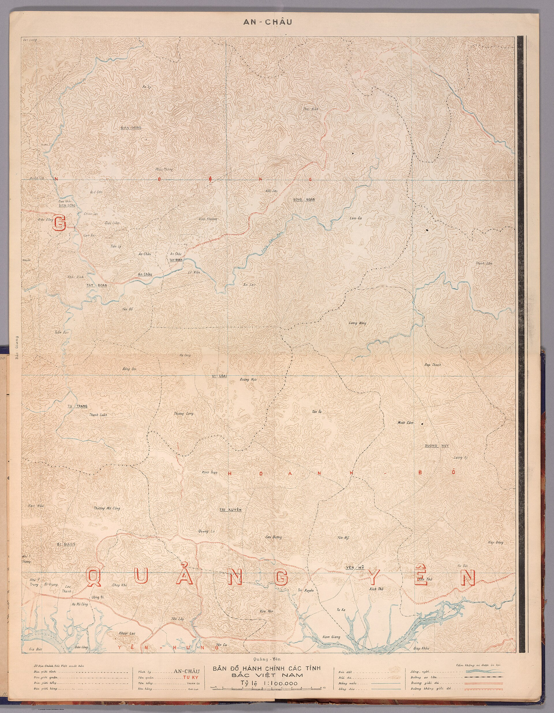

第 22 章
遗忘从幸存者开始
加尔各答奇塔兰詹大道十七号的那扇铁门，在雨季开始前最后一次被拉上时，门轴发出了一声很短的响动，短得几乎被街上黄麻卡车的引擎声盖过。留守处的周副官站在门廊下，看着最后一批木箱被抬上卡

越南富国岛海岸线
图源：维基共享资源 · Sở Địa-Chính Bắc-Việt, Phủ Thủ-Hiền Bắc-Việt Quồc Gia Việt Nam · Public domain
车。箱子里是三年来的往来函件、几本边角卷起的名册残页，还有一摞无人认领的士兵证件。纸片上的照片已经受潮发黄，几个年轻人的面孔被霉斑从中间咬开，像被人用橡皮擦去了一半。
周副官把手伸进上衣口袋，摸到那份早晨刚到的电报。重庆来的指令很简短：留守处即日裁撤，未了事宜移交驻加尔各答总领事馆，所有档案就地封存或销毁。电报没有说明封存期限，也没有提到那些尚未归国的人员名册如何处置。周副官把电文读了三遍，确认其中没有遗漏任何一行之后，折好放回口袋，提起了自己的藤编行李箱。
他后来不记得自己是否回头看过那扇门。但在以后的许多年里，他反复梦见那个门廊，不是因为它有什么特别，而是因为门后面还锁着几百个名字。那些名字属于1945年战争结束时未能随建制部队回国的中国士兵。这正是富国岛上的沙地所追问的：当肉身被隔绝，纸面上的存在是否也面临系统性抹除？此刻，答案正以封存和销毁的形式，从加尔各答的这扇铁门后开始。
他们分散在加尔各答的临时营房、兰姆伽训练基地的废弃宿舍、密支那和八莫附近的残存兵站，以及印度东北部几个连地名都未完全确定的小镇上。战争结束的方式对驻印军系统而言过于含混。1945年8月日本投降时，新一军和新六军主力已经在缅北完成作战任务，正在集结准备回国。
但一个军的撤退不是拔营就走。装备要清点移交，伤病员要分批后送，与英印当局的防务交接要逐项谈判。最关键的是，那些在战斗中被冲散、在行军中因病落队、或者在占领区执行零星任务的小股部队，并不都能在第一时间接到集结命令。主力部队登船回国之后，这些零散人员才陆续从丛林、山村和边远兵站里走出来。
有人走了几个星期山路才到达最近的英军据点，有人在缅北华人村落里寄居数月，靠给当地商人当搬运工或保镖换取食宿。等他们找到中国军队的留守机关时，得到的答复往往只是“原地等候”——因为留守机关本身也在等待命令，而命令来得越来越慢，越来越含糊。1946年初，加尔各答留守处还能维持基本运转。
当时在编人员二十余人，负责清点驻印军遗留物资、与英方结算后勤账目、为陆续归队的散兵办理身份核验和船票申请。工作量并不小，但真正令人窒息的不是事务本身，而是信息的不对称。国内局势正在急剧变化。国共内战从东北扩大到华北，原属远征军序列的精锐部队被整建制投入各个战场，已经没有余暇顾及远在印度洋岸边的一间办公室。
变化是从1946年夏天开始的。先是每月定期汇来的留守经费开始延迟，然后是汇款数额逐月削减。到了秋天，国内发来的公文都变得稀疏起来。留守处发出的请示电报常常没有下文，偶尔收到的回复也只是一些短句：“着该处酌情办理”“经费困难希自行筹措”“未了事宜可移交领事馆”。这些措辞单独看并不构成明确指令，但放在一起，意思很清楚：你们已经不在优先序列里了。
1947年春天，留守处人员被削减到七人。同年秋天，剩下四人。到1948年初，就只剩下周副官和一名疟疾反复发作的老军需官。
军需官在三月间终于获准回国，走时带走了最后一批可以归档的正式文件——驻印军司令部移交英方的装备清单副本，每一页都盖着双方代表的印章。那是在日后万一需要查账时唯一可靠的凭证。但零散士兵的名册、临时登记表、身份证明副本和医疗记录，被判定为“非正式档案”，不在移交范围之内。周副官问过军需官，这些非正式档案该怎么处理。军需官想了想，说：“锁在柜子里。等将来有人来查，再拿出来。”
“将来”是个很重的词。在1948年春天的加尔各答，这个词承载着一种近乎虚妄的期待。将来，内战会结束，政府会重新有余力处理这些遗留问题，那些散落在印度和缅甸各地的人会被找到，名字会被重新登记，服役经历会得到承认，他们会拿到船票和复员津贴，回到四川、湖南、河南或山东的某个村庄，继续被打断的生活。这个“将来”在周副官的想象中也许只要三五年，也许更长一些，但总归会来。他把那些非正式档案装进铁柜，上了锁，把钥匙交给领事馆的一名三等秘书。秘书接过钥匙时看了一眼标签，问：“这些是什么？”
“留守处收存的部分人员名册和临时登记表。”周副官说。秘书把钥匙放进抽屉，没有继续追问。领事馆的人手也很紧张。内战导致大量华侨从东南亚涌入印度，签证申请、难民安置和侨汇处理已经占用了几乎全部精力。那些已经结束的战争和尚未归国的士兵，不在任何人的紧急清单上。
这并不意味着某个具体的人冷酷无情。恰恰相反，每一个环节上的人都觉得自己只是在做份内之事。留守军官按指令移交档案，领事馆秘书按惯例保管钥匙，上级机关按战时原则决定资源分配的先后次序。没有人蓄意要抹掉那些名字。但正是在这种没有人蓄意的正常运转中，名字开始从纸面上消失。
铁柜在领事馆的地下室里放了多久，没有人确切知道。后来的迹象显示，加尔各答的湿热气候对纸质档案的保存极为不利。雨季时地下室进水是常事。铁柜能防鼠咬虫蛀，却挡不住潮气渗透。那些用劣质纸张印制的登记表，在持续潮湿中只需几个月就会开始霉变。墨迹洇开，照片粘连，手写的姓名和番号渐渐模糊成无法辨认的灰绿色斑块。
但这还不是最彻底的消失方式。1949年末至1950年初，随着政权更替，驻外使领馆的人员和档案经历了一次大规模调整。加尔各答总领事馆的旧档在移交中被重新清点分类。那些被认为“无现实价值”的文件——前政权军事机构的零散记录、失效的身份证明副本、无法归入现行档案体系的杂项材料——面临着两种命运：继续封存，或者销毁。没有人下达过一份明确的销毁命令。
但同样，也没有人下达过一份明确的保存指令。在新旧交替的时期，档案管理员面对一堆没有编号、没有索引、没有明确责任归属的旧纸片时，最稳妥的选择就是让它们消失。
这不是阴谋，不是某个具体的人做出的恶意决定。它只是一个运转中的行政体系对边缘残片的自然排斥，就像人体会代谢掉失去功能的细胞，不会有人为此写一份备忘录。铁柜中的名册就这样在档案交接的缝隙中消失了。没有人记录销毁日期，没有人保留副本，甚至没有人记得它们曾经存在过。
如果许多年后有人问起，领事馆的老职员也许会隐约想起地下室曾经锁着一些旧文件，但具体是什么内容，属于哪个部门，什么时候处理掉的，已经没有人能说清楚。
而名册上的人还活着。他们中的一些人仍在印度东北部的阿萨姆邦和曼尼普尔邦，在茶园和筑路工地上做零工；另一些人沿伊洛瓦底江河谷向南迁徙，进入缅北华人社区，靠做小生意或种植罂粟为生；还有一小部分人向西越过印缅边境的山脉，进入东巴基斯坦的吉大港地区，与早已定居的华裔移民混居。他们大多数在离开军队时都带着某种形式的身份证明——一张盖着番号印章的退伍证、一份手写的服役记录、或者至少是一张写有姓名和部队番号的纸片。
但纸片是会丢失的。在丛林跋涉中被雨水泡烂，在工棚火灾中烧成灰烬，在反复折叠后从折痕处断裂，在盗窃或抢劫中连同随身包袱一起消失。一旦纸片没了，一个人就只剩下自己的口述。
而口述在行政体系中不具备任何效力——不能凭口述申请船票，不能凭口述证明自己曾经是中士或上等兵，不能凭口述要求政府承认服役年限并发放抚恤金。需要那张纸，那个盖着公章的番号，那本可以查证的名册。当名册本身已经不存在时，所有这些需要都变成了不可能。这就是遗忘的机制。它不始于记忆衰退，不始于亲人相继离世，不始于民间口述逐渐模糊。
它始于行政档案的系统性消失——本应作为记忆载体的纸张，在政治版图重组的时刻被判定为“无价值”，然后被丢弃、销毁、或遗忘在地下室某个角落直至物理损毁。档案消失之后，那些人的服役经历就失去了可验证性。服役经历无法验证时，他们在法律和行政意义上的“存在”就开始蒸发。行政存在蒸发之后，社会记忆便失去了最坚固的锚点。
这不是某一份政策文件造成的结果。没有任何一份文件说过“这些人不应被承认”。问题在于，也没有任何一份文件说过“这些人应当被承认”。在一个行政体系崩溃和重组的过渡期，未被明确纳入新体系的旧档案，落入了制度的灰区。
灰区中的人，既不被否认，也不被确认。他们只是不再被看见。1948年秋天，周副官锁上铁门大约四个月后，一名原新一军上等兵从阿萨姆邦的迪布鲁格尔步行来到加尔各答。他走了将近一千公里，沿途搭过运茶卡车，在火车站候车室里睡过好几夜。他来到奇塔兰詹大道十七号时，铁门紧锁，门上的铜牌已经被人摘掉，门缝里塞着几份过期的英文报纸。他敲了隔壁的门。隔壁是一家经营黄麻生意的印度商行，会计告诉他，那间办公室里的中国人几个月前就搬走了，不知道去了哪里。士兵在门口坐了一整个下午，然后起身去了中国领事馆。
接待人员耐心地听完他的叙述。他1943年入伍，在兰姆伽受训，编入新一军第三十八师，参加了胡康河谷和密支那的战斗。1945年8月战争结束时，他正在密支那养伤——腿部被弹片击中，保住了腿，但走长路仍然跛。伤愈后被告知主力已经回国，需要自行前往加尔各答留守处报到。等他辗转到达时，留守处已经裁撤。接待人员问他有没有退伍证或其他身份证明。
他从怀里掏出一个油纸包，小心打开。里面是一张折叠多次的退伍证明书，纸张已经严重磨损，折痕处几乎断裂，但番号印章和签名仍然可辨。接待人员看了看证明，又看了看他，说：“我们会把你的情况记录下来，但需要时间核实。你先找个地方住下，过些天再来。”
士兵在加尔各答的华人区找了个便宜的客栈住下。等了两个星期，再去领事馆时，接待他的是另一个人。这个人翻找了半天记录本，没有找到他的登记信息。士兵又把退伍证明掏出来，把整个经历重新讲了一遍。新的接待人员做了记录，让他再等。他又等了一个月。再去时，第三个人告诉他，领事馆已经向国内发函查询，但没有收到回复。“现在国内局势很乱，”那人说，“很多档案都找不到了。你要有耐心。”
他等了六个月。这六个月里，他靠在加尔各答港口扛货维持生计。受过伤的腿在重体力劳动后常常肿得无法弯曲，但他没有别的选择。没有合法身份意味着无法进入正规劳动力市场，无法开设银行账户，无法向任何官方机构寻求帮助。他唯一能做的只有等待，等待那封永远不会来的回复函。1949年春天，士兵再次来到领事馆时，发现门口的旗杆上已经换了旗帜。他站在街对面看了很久，然后转身离开。他没有再回去过。
这个人的经历并非个别。1946年至1949年间，类似的情形发生在加尔各答、仰光、曼德勒和印度东北部的多个城镇。
留守机关逐一关闭之后，滞留人员与祖国之间的最后一条行政纽带被切断。有人试图写信联系国内家人，但战后邮政系统不稳定，许多信件没有回音；有人尝试向英印当局申请难民身份，英方态度冷淡——这些人是中国军人，不是英国的责任；还有人试图通过当地华人商会获取帮助，但商会的资源有限，解决不了身份合法化这样的根本问题。更令人不安的细节出现在档案交接的夹缝中。
1947年底，兰姆伽训练基地最后一批留守人员撤离时，将一批人事档案移交给英方暂为保管。
这批档案包括约三千名在兰姆伽受训士兵的训练记录、体检报告和编队名册。移交清单上列明了档案的种类和数量，双方代表签字确认。但到1950年代初，有人试图查找这批档案下落时，英方表示档案已在移交后不久转交给了中国领事馆；而中国领事馆的记录显示，他们从未收到过这批档案。这批档案究竟在哪里消失的，至今没有确切答案。也许在转运途中遗失，也许在某间仓库里被误当废纸处理，也许移交清单本身出了差错——接收方实际收到的文件与清单所列不符，但在那个混乱时期没有人仔细核对。无论原因如何，结果是确定的：三千个人的训练记录从此不存在了。
这些人中的大部分后来随主力部队回国，档案缺失对他们的生活影响有限。但对于滞留在印度未能回国的人来说，训练记录的消失意味着他们与驻印军体系之间最后一点可验证的联系也被切断了。这种档案消失的后果，在个体层面上格外残酷。
一名士兵如果丢失了个人的退伍证明，本来可以通过查询部队名册来重建身份——只要名册还在，名字还在上面，服役经历就可以得到证实。但当名册本身也消失之后，丢失个人证明就变成了一场无法挽回的灾难。他成了一个在纸面上不存在的人。而一个在纸面上不存在的人，很难被承认为幸存者。
“幸存者”这个词隐含着一种社会性的确认。确认你确实经历了那场战争，确实承受了那些苦难，确实有资格讲述那段历史并获得相应的承认与补偿。没有这种确认，你就只是一个“自称经历过战争的人”。你的叙述缺乏制度性背书，你的诉求无法进入行政程序，你的存在介于事实与传说之间。
1946年至1949年间发生在驻印军滞留人员身上的，正是这种从“幸存者”到“自称者”的身份降级过程。这个过程没有仪式，没有公告，没有审判。它只是静悄悄地发生在一间间关闭的办公室、一箱箱霉烂的档案和一次次没有下文的查询请求中。
当最后一间留守处的铁门被锁上时，门外的人并不知道，锁上的不仅是房间，还有他们重返正常生活的通道。这一过程的驱动力并非来自某个人的恶意，而是来自更深层的结构。
战后中国政治版图的重组，从国共内战到政权更替，使原属远征军体系的指挥机构、人事档案和后勤网络被整体卷入内战。新一军和新六军在东北战场遭受重创后，残部被不断改编重组，原有番号序列被打乱，人事档案在频繁的部队调动中出现大量缺损。留在印度的零散人员，在国内军事行政体系中已经没有对应的“单位”可以接收他们。原属部队要么不复存在，要么已经改编为新的番号，而新部队的人事官员面对一份写着旧番号的查询函，往往无从查起。内战动员的紧迫性使所有行政资源都被优先配置到前线需求上。军费开支、运输能力、通讯带宽和人员精力，全部集中在正在进行的战争。
滞留国外的几千名士兵——这个数字相对于国内数百万军队的调动而言太小了——不可能在资源分配中获得优先级。
他们的存在不是被刻意遗忘，而是在资源极度紧张的情况下被自然忽略。这种忽略一旦开始，就会自我强化。忽略的时间越长，问题就越复杂。滞留人员的身份核实越困难，档案缺失越多，解决问题的成本就越高。成本越高，就越不可能被纳入优先处理序列。
到了1949年，当内战接近尾声、新政治秩序开始建立时，这些滞留者已经变成几乎无法处理的遗留问题：档案散失在多国多地，身份难以核实，法律地位模糊不清，任何解决努力都需要跨越多个国家和多个行政体系的协调。在一个百废待兴的时代，这种协调几乎不可能实现。
于是，“遗忘”就从行政疏忽演变成结构性排斥。它不再是某个环节的失误，而是整个体系面对边缘残片时的自然反应。
无法被归入胜者序列的境外滞留者，在新的政治叙事中找不到位置。他们既不是内战的参与者——因而无法享受胜利者的待遇；也不是明确的受害者群体——因而无法获得相应救济。他们只是前一个时代的残余，被留在国境线之外，留在档案的缝隙中，留在历史的灰区里。
这一时期的印度支那局势，为这种灰区提供了另一种对照。1946年，法国试图在印度支那重建殖民统治的政治安排，与越南独立力量之间的谈判陷入僵局。同年9月，由于在两大核心问题上谈判破裂，胡志明与法国代表马里于斯·穆泰签署了一份临时协定，重申了早先3月协议的内容，但未就南圻统一公投事宜作出具体规定，并约定1947年1月前重启关于最终条约的谈判。这份临时协定本身没有解决任何根本问题，只是把危机向后推迟了几个月。它创造的是一种悬置状态：没有最终归属，没有明确权利，没有可执行的路线图。
而正是在这种国际政治制造的悬置中，远离印度支那数千公里之外的加尔各答，另一群被悬置的人正在从纸面上消失。这种对比并非偶然。
战后亚洲的政治版图重组，无论在中国还是在印度支那，都产生了一类新的人群：他们不属于任何明确的政治单元，不享有任何确定的法律地位，不被任何政府积极承认。
他们的存在状态，在国际法上找不到确切名称，在行政程序中找不到对应栏位，在历史叙事中找不到恰当位置。富国岛上的中国士兵是这样，在加尔各答等待查询结果无果而终的散兵也是这样。前一批人被国际安排推入隔绝之地，后一批人被国内体系从纸面上抹掉存在。两条路径不同，终点却极为相似。
它们共同回答了一个问题：当中国以人力投入换取国际地位的交易结束后，那些被交付出去的个体并不会自动回到祖国的保护之下。交易终止了，但交易留下的债务没有清偿。这些债务不是以货币计算的，而是以人的存在状态计算的。
1949年底，加尔各答奇塔兰詹大道十七号的那间办公室被一家经营茶叶出口的英国公司租下。装修工人清理房间时，在壁橱角落里发现了一个铁制文件柜，锁着。撬开锁，里面是几摞发霉的纸张，字迹已经模糊难辨。工头看了看，判断是前任租户留下的无用废纸，让工人把它们连同其他垃圾装进麻袋，送到附近的焚化场。焚化场的工人把麻袋扔进炉子时，一张纸片从袋口飘出来，落在湿漉漉的地面上。
那是一张士兵登记表的残页，右上角贴着照片，照片上是个二十岁出头的年轻人，穿着驻印军的夏季制服，领口扣得整整齐齐。姓名栏被霉菌吃掉了一半，只剩下最后一个字还勉强可辨，是一个“海”字。炉门关上之后，火吞没了其余的纸张。落在炉外的残页也没有幸存多久。下午的一场阵雨把它浇透，纸张化成了泥浆中的一团纤维。照片上那个年轻人的面孔最后消失在一洼雨水中，连同那个只剩下一半的名字一起，流进了加尔各答的下水道。
没有人看见这一切发生。它太小，太安静，太不像一个值得被记录的历史事件。但它就是历史本身。不是由战役和条约构成的那种历史，而是由无数微小消失构成的那种历史。在这种历史里，遗忘不是结果，而是过程；不是终点，而是起点。
而对于那些仍活着的滞留者来说，纸面上的消失只是一个开始。他们的肉身还在，在阿萨姆的茶园里，在缅北的山村中，在东巴基斯坦的港口城市里。他们还活着，还会继续衰老，继续用口述保存那些已经无法被档案证实的故事。
但他们也清楚，当名字从名册上消失之后，剩下的唯一证据就是自己的存在本身。而存在本身，在一个依赖文书证明的世界里，是最脆弱的一种证据。它经不起时间的侵蚀，经不起行政程序的质疑，经不起政治版图的再次重组。当最后一个记得那些名字的人也死去之后，那些名字所代表的一切——训练场上的汗水、丛林中的跋涉、战斗中的恐惧与勇气、胜利后的疲惫与期待——就会变成一种无法被证实的存在。它们介于发生过和没发生过之间，介于历史与传说之间，介于记忆与遗忘之间。
周副官后来回国了。他是1948年夏天搭上一艘英国商船走的，以归国复员军官的身份，顺利拿到了船票。抵达上海时，内战已经打到长江沿线，没有人检查他的证件，也没有人问他关于加尔各答留守处的事。他的归途是顺利的，甚至比许多人都顺利。
但他在船上的某个夜晚，忽然想起自己锁在领事馆地下室的那些名册。他没有对任何人提起此事，也没有为此做过任何补救。许多年后，他开始怀疑自己是不是忘记了什么。
但他最终说服自己，他只是执行了命令。这个想法或许是真诚的。在那样一个时代，每一个具体的人都只是在执行命令。
接收命令的人锁上门，下达命令的人早已离开，归档的人把它们放进柜子，转交的人把柜子抬上卡车，清理的人把它们扔进麻袋，焚化的人把它们推进炉子。没有人停下来问一句：这些名字上的人在哪里？他们后来怎么样了？他们回家了吗？这些问题没有被提出。因为它们落在所有部门的职责之外，落在所有程序的边界之外，落在所有叙述的框架之外。它们悬在那里，像奇塔兰詹大道十七号门前那扇不再开启的铁门，像一个被留在加尔各答地下室里的铁柜，像一张飘出麻袋又消失在雨中的照片。
而当这些纸面上的证据全部消失之后，那些仍然散落在边境地带的人，就不再有名字，不再有番号，不再有待查证的服役经历。他们只剩下一具具仍在呼吸的身体，和一种无法被行政语言描述的存在状态。他们的战争从此刻起进入了一个新阶段：不是对抗敌人，而是对抗自己正在被彻底遗忘的处境。
那扇铁门锁上之后，门里的人并没有消失。他们只是进入了那个灰区。在那里，归途永远无岸，而遗忘，从幸存者开始。